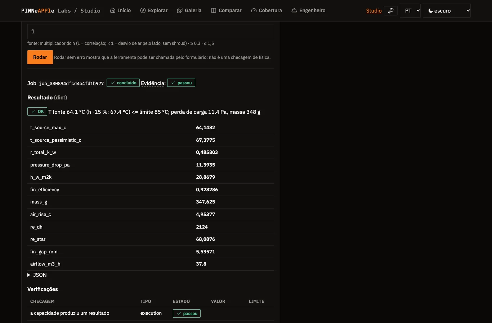

A case can finish with “finished” and still be wrong. Unsupported, the beam moves 1.8×10¹¹ mm and the solver does not complain. With a poor mesh, the field comes out colourful and meaningless. In both cases the mistake only surfaces when someone looks closely — usually after the queue.
What was done
Two checks before execution. The mesh check reads OpenFOAM, Gmsh, VTK, Abaqus and STL and returns quality metrics, a heatmap and the worst elements — with the same numbers as checkMesh. Preflight reads the case and returns PASS, WARNING or FAIL, naming the file and the line.

The numbers
The mesh metrics match OpenFOAM's checkMesh. The unsupported-beam case is caught before execution, as FAIL, instead of turning into a result that looks like a result.
What it changes
The queue stops being the place where mistakes are found. And the report shows what was not checked: mesh independence, for instance, only exists if someone ran the refinement study — so it appears as “did not run”, not as passed.